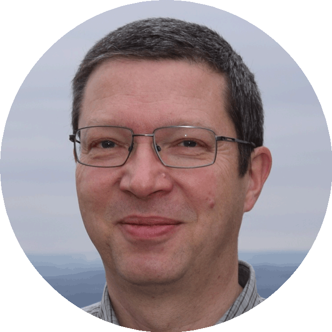
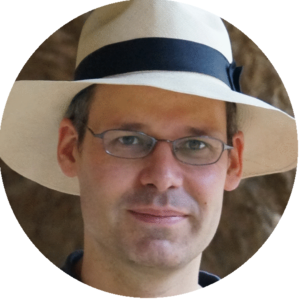

Keynote speakers
SPEAKERS



We are pleased to announce that Why R? 2019 Conference will be organized by the Why R? Foundation. The third official meeting of Polish R enthusiasts will be held in Warsaw 26-29 September 2019. As the meeting is held in English, we are happy to invite R users from other countries.
The registration fee includes participation in Special Interest Groups. Continuous coffee breaks and lunches are covered by the fee. Refunds are possible till 31.07.2019.
Abstract submissions are format free, but please do not exceed 400 words and state clearly a chosen call. The abstract submission form is available here.
On the 27th of September we organize meetings of Special Interest Groups, where participants of WhyR 2018 can discuss their experiences in three specific areas:
This board aims to inspire members of affinity groups to pursue careers in data science. We hope that this platform for networking and exchange of experiences will help in boosting diversity of R community.
During this meeting, participants of WhyR will have a chance to learn from more experienced R enthusiasts about their career paths.
Data science, as every emerging field, requires constantly evolving set of skills. In any setting, both corporate and academic, teaching data analysis remains a challenge. During this meeting data science practitioners will share their experiences in introducing their students to basic and advanced concepts of data science.